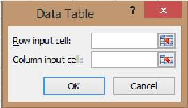

Data Table (What-If Analysis)
Data Table menghitung satu rumus berulang kali dengan nilai masukan berbeda, misalnya cicilan pada berbagai suku bunga.
Langkah praktik
- Susun rumus di sudut kiri atas tabel, nilai masukan di kolom (atau baris) di sampingnya.
- Blok seluruh tabel.
- Data > What-If Analysis > Data Table.
- Isi Column input cell dengan sel masukan yang dipakai rumus (atau Row input cell untuk deret baris).
- Tekan OK.
Tangkapan layar praktik
